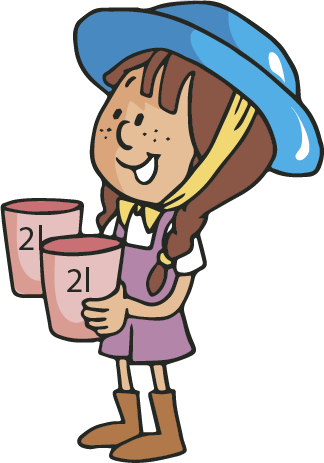
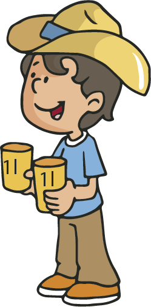
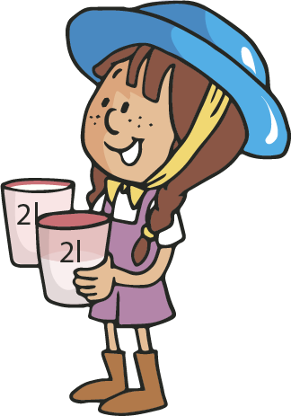
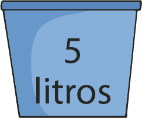
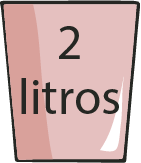
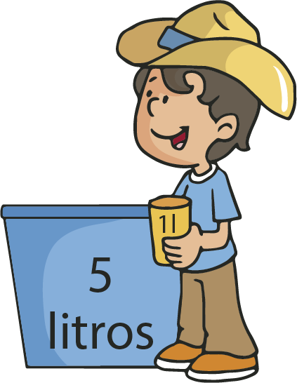
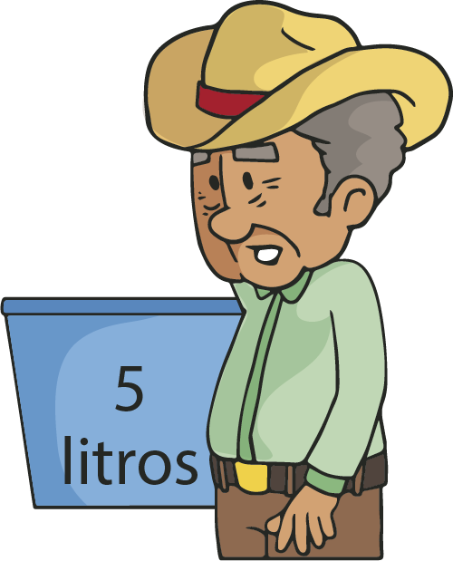

Identificamos la medida de un litro
Siguiente

¿Cuántos litros usó el abuelo para llenar los vasos de Elena?
{{i}}
Siguiente

¿Cuántos vasos de Alan llenan un vaso de Elena?
{{i}}
Siguiente

¿Cuántos litros le hacen falta a Elena para llenar su vaso?
{{i}}
¿Cuántos litros sobrarán en el recipiente del abuelo si llena sólo los vasos de Elena?



¿Cuántos vasos como el de Alan se pueden llenar con el recipiente del abuelo?

¿De qué formas se puede llenar el recipiente del abuelo usando los vasos de los niños?
+
+
+